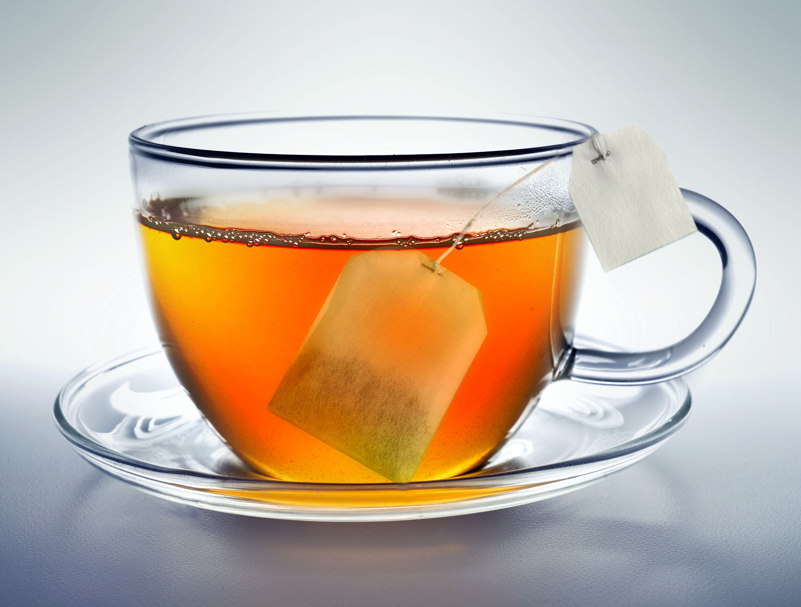

How to make the best tea

Tea is a beverage enjoyed all over the world, often served both hot and cold.
It consists of a blend of herbs steeped into boiling water, making the water retain the anti-inflammatory and healing properties of the herbs.
Things you will need:
- Kettle
- Water
- Teabags or loose leaf tea
- A mug
- Honey
Steps:
- Pour some water into the kettle and turn it on.
- Let the water boil.
- Place the teabag inside the mug and pour the boiling water into the mug, letting the herbs steep for a few minutes.
- Remove the teabag and dispose of it.
- For added flavor and sweetness, add some drops of honey to the tea.